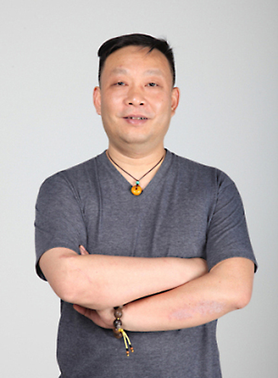

| 姓名 | 照片 | 个人信息 |
| 张葳 |
承担任务：项目主持 所在单位：湖北工业大学艺术设计学院 专业技术职务：教授行政职务：环境设计系主任 教学研究情况 主持的教学研究课题（含课题名称、来源、年限，不超过5项）；作为第一署名人在国内外公开发行的刊物上发表的教学研究论文（含题目、刊物名称、时间，不超过10项）；获得的教学表彰/奖励（不超过5项）。 1、教研课题 以“多元创新”为特色的艺术设计专业核心课程群建设的研究与实践，湖北省教育厅，2010-2013. 2、教研论文、教材 1）感性教育与人文氛围，《装饰》，2014 2）以“多元创新”为特色的艺术设计课程群建设初探，《设计艺术研究》，2013 3）汉代装饰艺术对中国当代平面设计的影响，《包装工程》，2014 4）环境艺术设计制图与透视(第2版)，中国轻工业出版社，2017 3、教学表彰 湖北工业大学“十佳教学质量奖”一等奖. 学术研究情况 近五年来承担的学术研究课题（含课题名称、来源、年限、本人所起作用，不超过5项）；在国内外公开发行刊物上发表的学术论文（含题目、刊物名称、署名次序与时间，不超过5项）；获得的学术研究表彰/奖励（含奖项名称、授予单位、署名次序、时间，不超过5项） 1、科研课题 国家社科基金艺术学项目： 《中国古代室内设计史》 国家教育部，2016年，主持人 2、学术论文 1）建筑中庭对公共建筑采光节能的影响，《建筑与文化》，1/2，2019 2）浅析屋顶花园对城市局部生态改善的优势，《大众文艺》，1/2，2019 3）文艺复兴室内设计——以麦西米府邸为例，《大众文艺》，1/2，2018 4）浅析瑶里古镇民居地域文化之美，《现代装饰(理论)》，1/2，2017 5）城市内湖驳岸景观照明设计探讨，《现代装饰(理论)》，1/2，2017 |
|
| 刘涛 |
 |
承担任务：实验项目开发管理 所在单位：湖北工业大学艺术设计学院 1975年10月出生于湖北武汉，男，汉族。 专业技术职务：讲师行政职务：竞赛办主任 教育经历 1995年至1999年湖北工业大学环境设计本科，2004年至2007年湖北工业大学环境设计研究生，2007年研究生毕业留校任教至今，职称讲师。 纵向课题： 参与2016年国家社会科学基金单列学科项目《中国古代室内设计史》；2018年国家艺术基金《古陶瓷修复青年人才培养》；2019年教育部人文社会科学研究项目《基于乡村振兴战略的长江上游山地乡村“康养园宅”设计与服务研究》。 发表论文 外文期刊《Study on agricultural park landscape pianning based on visual analysis》Advance journal of food sciences technology，2015.11；外文期刊《Research on landscape design of food industrial zone》Advance journal of food sciences technology，2015.11. 创新教育成果 2017年指导学生获得全国大学生信息技术大赛全国一等奖一项；2018年指导学生获得全国大学生计算机设计大赛二等奖两项；2019年指导学生获得全国大学生计算机设计大赛全国一等奖一项。 专利与教材 出版教材《环境效果图创意表现》2016.4中国电力出版社；《环境效果图精致手绘》2016.9中国轻工业出版社；《人机工程学》2015.4机械工业出版社；《空间照明设计》2017.4机械工业出版社；《图解照明设计》2019.7机械工业出版社。 |
| 李平 |
 |
承担任务：实验项目开发管理 所在单位：湖北工业大学艺术设计学院 1978年8月出生于湖北荆州，男，汉族 专业技术职务：讲师 教育经历 1997年至2001年湖北工业大学环境设计本科，2001年至2004年湖北工业大学环境设计研究生，2004年研究生毕业留校任教至今，职称讲师。 纵向课题 参与2013年副省级课题“借力国际园博会事件构建城市地域特色游憩设施系统”；2015湖北省教育厅人文社科青年项目《城市形象设计的符号模型构建研究》；2016年湖北省教育厅人文社科一般项目《3D交互式虚拟现实技术在建筑装饰行业中的应用与研究》。 发表论文 中文核心期刊SCD《动态图像序列影像检测仿真研究》计算机仿真，2018.5；中文核心期刊《如何在展示空间应用茶文化艺术》福建茶叶， 2017.12 ；中文核心期刊《略谈装饰纹样在茶馆设计中的应用》福建茶叶， 2017.11 中文核心期刊《浅谈茶文化符号在环境设计中的应用》福建茶叶， 2017.8；中文期刊《环境艺术设计教学中可持续发展理念的融入与运用分析》现代园艺，2019.1. 创新教育成果 2017年指导学生获得全国大学生信息技术大赛虚拟现实组，全国一等奖一项，全国二等奖一项；2018年指导学生获得全国大学生计算机设计大赛一等奖一项，二等奖三项，三等奖一项；2019年指导学生获得全国大学生计算机设计大赛二等奖两项，三等奖四项。 专利与教材 共获得八项国家外观专利授权。出版教材《建筑模型设计与制作（华科大版）》2017.9华科大出版社；《中文版3dmax2014/vary效果图全能教程》2015.4机械工业出版社。 |
| 汤留泉 |
 |
承担任务：实验项目开发管理 所在单位：湖北工业大学艺术设计学院 专业技术职务：讲师 教学研究情况 主持的教学研究课题（含课题名称、来源、年限，不超过5项）；作为第一署名人在国内外公开发行的刊物上发表的教学研究论文（含题目、刊物名称、时间，不超过10项）；获得的教学表彰/奖励（不超过5项）。 （1）精品课程《室内设计学》——湖北工业大学校级 2008 （2）以“多元创新”为特色的艺术设计专业核心课程群建设的研究与实践——湖北省教育厅教研项目 2010 （3）读图时代影像艺术的时代性研究——湖北省教育厅人文社会科学研究项目2013 （4）中国古代景观居住思想在湖北山水民居中的当代表象研究——湖北省教育厅人文社会科学研究项目 2013 （5）《建筑初步与小型建筑设计》教学研究——湖北工业大学校级 2013 学术研究情况 近五年来承担的学术研究课题（含课题名称、来源、年限、本人所起作用，不超过5项）；在国内外公开发行刊物上发表的学术论文（含题目、刊物名称、署名次序与时间，不超过5项）；获得的学术研究表彰/奖励（含奖项名称、授予单位、署名次序、时间，不超过5项） （1）《一个苹果》2005中国之星艺术设计大奖 希望之星优秀奖 中国包装联合会设计委员会，1/1，2016 （2）《休闲椅》国家外观专利 中华人民共和国国家知识产权局 专利号：ZL200530024754.2，1/1，2016 （3）《台柜灯具》国家外观专利 中华人民共和国国家知识产权局 专利号：ZL200530024755.7，1/1，2016 （4）《传统民居隔断样式设计》中国北京国际设计博览会 参展，1/1，2018 （5）《人机工程学》 湖北工业大学第二届优秀多媒体课件 三等奖，1/1，2018 （6）《现代别墅居住空间设计中的传统形式》论文发表在《科协论坛》上 CN42-1341/G3 ISSN1007-3973，1/1，2018 （7）《ZW夹芯墙板与外墙装饰施工》论文发表在《墙材革新与建筑节能》上CN11-3732/TU ISSN1006-9135，1/1，2019 |
| 李映彤 |
 |
承担任务：实验项目开发管理 所在单位：湖北工业大学艺术设计学院 专业技术职务：副教授 |
| 饶鉴 |
 |
承担任务：实验项目开发管理 所在单位：湖北工业大学艺术设计学院 专业技术职务：教授行政职务：副院长 导师姓名：饶鉴 出生日期：1980/12/7 导师类型：博士生导师 个人简介 中共党员，博士、教授、博导，品牌策划PI、校南湖学者学术带头人、校发展规划专家委员会委员、校教学督导委员会委员，艺设副院长。承担一百余项城市设计、品牌运营项目。出版著作7部，发表论文30余篇，主持参与教科研课题40余项，国内外竞赛获奖30余项，指导学生获奖多项，指导学生创办企业多家。 研究方向：品牌设计与策划、智能艺术 主讲硕士生课程：新媒体整合与创新；广告媒介策划与设计；媒介整合与创新 主讲博士生课程：无 科研项目 近三年主持省以上项目： ①湖北省发改委项目：国庆70周年群众游行湖北彩车设计； ②湖北省社科基金：城市形象与城市文化的构建； ③湖北省人文社科重点项目：国家形象建构中城市品牌传播问题研究； ④湖北省人文社科重点研究基地项目：景区品牌传播对于湖北城市形象的建构研究； ⑤湖北省级教研项目：协同创新背景下设计学科大学生创新能力培养研究； ⑥教育部高教司：《原画设计》创意类专业教学内容和课程体； ⑦教育部高教司：人工智能艺术实践基地； ⑧教育部高教司：游戏美术设计校内实训基地建设； ⑨教育部高教司：设计类专业创新创业教育改革； ⑩教育部高教司：新媒体运营课程建设； ⑪教育部高教司：艺术类专业实训教学体系建设项目； ⑫教育部高教司：新媒体运营课程建设； ⑬教育部高教司：基于深度学习技术的跨界协同育人创新创业项目研发； ⑭湖北省社科基金：“中三角”城市品牌建构实证研究。 科研成果 近三年部分著作获奖： 《城市传播与景区品牌》，人民出版社，2017年； 《城市文化与品牌形象》，中国水利水电出版社，2019年； 《Arita/Table of Contents匠人匠心•现代陶艺设计》，华中科技大学出版社，2018年； 《平流层·当代影像本源思考》，华中科技大学出版社，2019年； 饶鉴邮票设计作品，《编辑之友》CSSCI期刊，2017年； 民国报刊新闻述评的话语分析研究，《编辑之友》CSSCI期刊，2017年； 《湖北感恩您》获抗疫援鄂纪念章设计征集评选，学术奖，2020年； 《大武汉》获第八届美术与设计大展，金奖2019年； 设计学人才“各美其美”分类培养模式的探索与实践，湖北省人民政府，高校教学成果二等奖，2017年； 校际协同理念下“交互领衔+优势转换”的传媒艺术人才培养改革实践，湖北省人民政府，高校教学成果三等奖，2017年； 《中国城市转型的生态发展之路》，湖北省委宣传部，湖北好新闻奖二等奖，2017年； 《九头鸟》获湖北高校第七届美术与设计大展，银奖，2017年。 |
| 王欣 |
 |
承担任务：实验项目开发管理 所在单位：湖北工业大学艺术设计学院 专业技术职务：副教授行政职务：副院长 导师姓名：王欣 出生日期：1977/7/23 导师类型：硕士生导师 个人简介 2001年毕业于湖北工业大学艺术设计学院并留校任教 曾任公共艺术系主任 现任艺术设计学院副院长 中国流行色协会会员 中国色彩教育指导委员会委员 湖北省工艺美术协会会员 主持与参与国家级和省级科研项目6项，公开发表学术论文18篇；先后主编专业教材7部，其中“十二五”普通高等教育本科国家级规划教材1部、全国畅销教材二等奖1部；团队项目荣获湖北省教育教学成果二等奖；先后参加国内外专业展览并获各级奖20余项；作品曾在法国 德国 捷克 秘鲁 日本 韩国等国家展出并被德国汉堡工艺博物馆和法国巴黎艺术城收藏 研究方向：艺术品设计 主讲硕士生课程：装饰品设计与手作；纤维艺术创作 主讲博士生课程：无 科研项目 湖北织绣工艺可视化传承与产业优化策略研究 省教育厅项目 2017年 科研成果 论文：民间刺绣劣化色彩的审美特征分析 包装工程 中文核心 ；马口窑陶器纹饰的造型风格初探 大众文艺学术版 SCD期刊；方寸之间——商周青铜器盖钮审美特征探析 大众文艺学术版 SCD期刊；复杂脱胎漆器表层图像缺损信息修复仿真研究 计算机仿真 中文核心；获奖：第二届中国高等院校设计艺术大赛 二等奖 教育部设计学教指委；北京国际设计周中国产、学、研优秀设计成果展佳作奖；教材《创意设计训练》获“十二五”普通高等教育本科国家级规划教材。 |
| 李继春 |

|
承担任务：实验项目开发管理 所在单位：湖北工业大学艺术设计学院 专业技术职务：教授 导师姓名：李继春 出生日期：1962/2/16 导师类型：硕士生导师 个人简介 1986年毕业于湖北工学院装潢设计专业，获学士学位。 2008年毕业于武汉大学城市设计学院，获硕士学位。 2013——2014年国家教委国内高级访问学者（清华大学美术学院）。教育部学位与研究生教育评估工作专家库成员。省财政厅政府采购专家库成员。 在多年的教学与实践中，主要研究方向为城市公共空间设计、展示设计及其理论，发表多篇相关学术论文与教材，多项设计作品获奖，主持或参与多项省部级科研项目，并主持完成湖北工业大学“工业文化长廊”景观规划项目等多项建筑及室内外环境设计与项目营造。 研究方向：城市公共空间设计、展示设计及其理论 主讲硕士生课程：“长江流域传统民居对比研究”“环境系统研究” 主讲博士生课程：无 科研项目 主持省部级科研项目《基于可持续发展的通用设计评测体系研究》等 科研成果 “湖北工业大学工业文化长廊”获湖北高校第六届美术与设计大展金奖 发表论文“场所的延伸性和包容性” 发表论文“商业空间环境对动线的需求分析” |
| 庹开明 |
 |
承担任务：实验项目开发管理 所在单位：武汉开明空间设计有限公司 专业技术职务：电气设备负责人行政职务：总经理 庹开明 1981年出生 武汉开明空间设计有限公司创始人、设计总监。毕业于武汉理工大学艺术设计学院，湖北工业大学艺术设计学院硕士研究生。 武汉开明空间设计有限公司成立于2010年,位于武汉关山大道软件园，是一家以工装为主的纯设计公司，主要从事酒店、办公、售楼部、商业、别墅等场所的室内装修设计，与多家房地产公司和武汉的大型装饰公司有长期合作，项目有： 1.三亚海棠湾凯宾斯基酒店方案， 2.上海岚水湾精品酒店方案， 3.吾行里临时营销中心空间及照明设计。 |
| 王琳 |
 |
承担任务：实验数据收集 所在单位：湖北康晶宏太建筑工程有限公司 专业技术职务：设计主管行政职务：总经理 王琳 1977年出生 湖北奥科视听工程有限公司设计总监，湖北工业大学艺术设计学院硕士研究生毕业。 公司是专业的音视频系统集成商，是专业舞台灯光，视频系统、体育场馆扩声、大型公共广播系统、舞台机械与幕布系统、数码影院系统及国内外各类知名品牌灯光等全方位服务的专业化公司。 先后承接了湖北洪山礼堂、东湖宾馆梅岭礼堂、湖北省人大、湖北省委、宜昌市委常委、襄阳市委常委、中南民族大学、华中师范大学、湖北省奥林匹克体育中心、武汉洪山体育中心、中国十五冶集团、湖北剧院、汉口江滩等众多的扩声系统、会议表决系统，视频系统、舞台灯光系统、舞台机械与幕布系统的大型会议、演出专业场所工程。 |